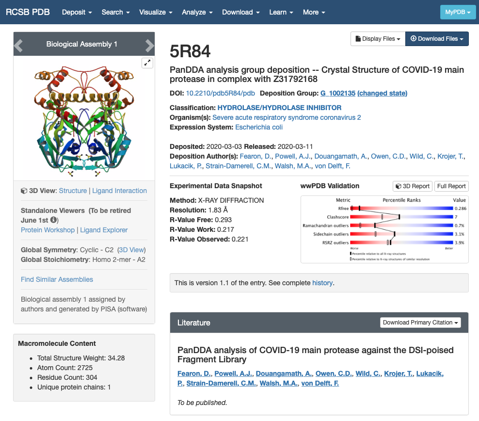
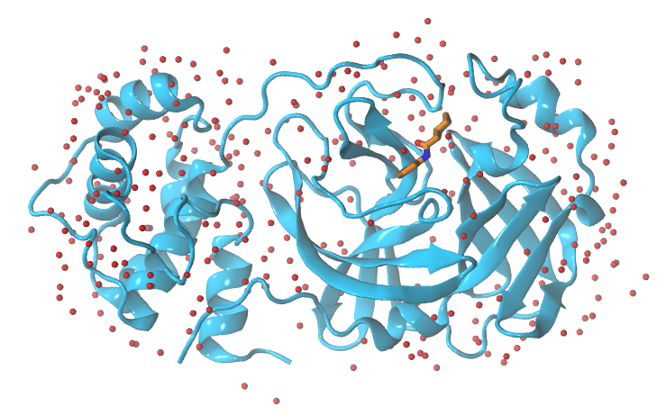
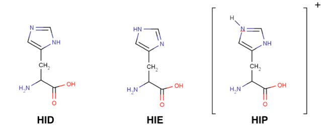
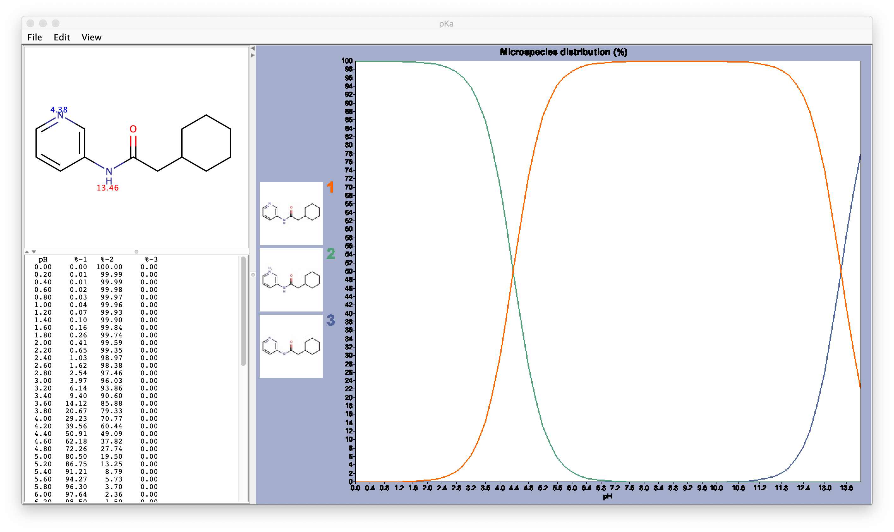
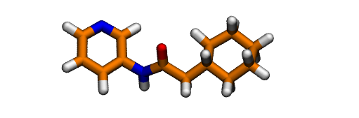

Preparing your PDB file
Overview
Teaching: 15 min
Exercises: 0 minQuestions
What should I check before preparing a simulation?
Objectives
Read the literature on your biological system.
Set the experimental conditions of your simulation (pH, …).
Assess the protonation states of your system (including all the elements in it: protein and ligand).
PROPKAcalculates the pKa values for each of the residues in your protein.Marvinsketch will assist you in predicting the protonation state for your small molecule.
Add hydrogen atoms to the GWS ligand with
openbabel.Prepare your protein with
pdb4amber.
Understanding your PDB file
We are going to use the X-ray structure of Mpro protein bound to a ligand from the PanDDA library. The PDB id we are going to use is 5R84. If you open this entry from the Protein DataBank you will find a lot of information of the protein structure:
- Experimental Data Snapshot
- wwPDB Validation
- Literature
- Macromolecules
- Small Molecules
- Experimental Data & Validation
- Entry History

We are interested in the quality of the structure and the contents of the structure:
- Experimental Data Snapshot and wwPDB Validation give us information about the quality of the model. In this case, the X-ray structure is not so great but this fragment screening was resolved really fast to enable computational efforts. In any case, it will have to do for the purpose of this workshop. For more information you can check out the Bioexcel webinar on Assessing structure quality in the PDB archive.
- The sections Macromolecules and Small Molecules give us information about the contents of the PDB file. We can see that there is only one macromolecule (only one chain) that corresponds to SARS-CoV-2 main protease. There are two small molecules in the structure: DMS and GWS.
- DMS is a crystallisation product and it doesn’t interest us.
- GWS is the fragment we want to model.
Once we know which molecules from the PDB file we want to model and which should be deleted from the PDB file, we can continue. You can download the PDB file from the website yourself or use the one we are providing in this repository.
Splitting the PDB in protein, ligand and water molecules
First, we will split the PDB in 3 different groups: protein, GWS ligand and water molecules as we need to treat them separately:
grep -v -e "GWS" -e "DMS" -e "CONECT" -e "HOH" 5r84.pdb > protein.pdb
grep "GWS" 5r84.pdb > GWS.pdb
grep "HOH" 5r84.pdb > waters.pdb

Replicating the experimental/target conditions
It is important to take into account experimental conditions of the system we want to simulate such as the pH, salinity… Since Mpro protein from SARS-CoV2 is located in the cytosol of the infected human cell, we are going to assume a pH=7.4. Do not asume that will always be the case in the future, you should always, please check the literature on your target protein before you start running your simulations.
Assessing the protonation states of the protein and preparing the protein for AmberTools
There are several methods to assess the protonation state of the residues in a protein (for further information, here). For example, the H++ server and PROPKA software can help you in the future. We are only going to use PROPKA command-line in this workshop.
propka31 protein.pdb
PROPKA returns the calculated pKa values for tritable residues in the protein. These are aminoacids, whose sidechain contains a chemical moiety that can change its protonation state depending on the pH of the environment they are found in. You have acidic residues (typically ASP and GLU, but in extreme environments TYR, SER and CYS can act as acids) and basic residues (LYS, ARG and HIS).
Protein forcefield encode these protonation states as different residue names (i.e. GLU and GLH for the two states of glutamic acid). You can find more information about these residues, and how its pKa depends on the chemical environment here .
When preparing a protein, we have to compare each one of the predicted pKa values with the chosen pH: if the pKa is below the chosen pH the residue should be deprotonated (that is acidic residues will be negatively charged and basic residues will be neutral), if above it will be protonated (acidic residues will be neutral and basic residues will be positively charged).
TIP:
This step is especially relevant when you are simulating catalytic cycles, where the reaction mechanism often involves proton transfer events. Please check the literature on your target protein before you start to run your simulations.
This is the summary of the propKa output for our protein:
--------------------------------------------------------------------------------------------------------
SUMMARY OF THIS PREDICTION
Group pKa model-pKa ligand atom-type
ASP 33 A 3.79 3.80
ASP 34 A 3.63 3.80
ASP 48 A 2.69 3.80
ASP 56 A 4.00 3.80
ASP 92 A 3.11 3.80
ASP 153 A 3.91 3.80
ASP 155 A 3.00 3.80
ASP 176 A 3.90 3.80
ASP 187 A 3.97 3.80
ASP 197 A 2.33 3.80
GLU 14 A 4.00 4.50
GLU 47 A 4.67 4.50
GLU 55 A 4.73 4.50
GLU 166 A 3.98 4.50
GLU 178 A 4.88 4.50
HIS 41 A 4.60 6.50
HIS 64 A 6.26 6.50
HIS 80 A 5.71 6.50
HIS 163 A 2.07 6.50
HIS 164 A 1.44 6.50
HIS 172 A 5.57 6.50
CYS 16 A 11.91 9.00
CYS 22 A 10.26 9.00
CYS 38 A 12.83 9.00
CYS 44 A 11.04 9.00
CYS 85 A 11.68 9.00
CYS 117 A 11.97 9.00
CYS 128 A 11.33 9.00
CYS 145 A 11.82 9.00
CYS 156 A 9.45 9.00
CYS 160 A 12.93 9.00
TYR 37 A 11.88 10.00
TYR 54 A 15.15 10.00
TYR 101 A 12.87 10.00
TYR 118 A 10.28 10.00
TYR 126 A 12.67 10.00
TYR 154 A 10.00 10.00
TYR 161 A 15.30 10.00
TYR 182 A 13.19 10.00
LYS 12 A 10.42 10.50
LYS 61 A 10.72 10.50
LYS 88 A 10.14 10.50
LYS 90 A 10.56 10.50
LYS 97 A 10.37 10.50
LYS 100 A 11.37 10.50
LYS 102 A 10.77 10.50
LYS 137 A 10.45 10.50
ARG 40 A 14.21 12.50
ARG 60 A 12.46 12.50
ARG 76 A 12.59 12.50
ARG 105 A 13.13 12.50
ARG 131 A 13.28 12.50
ARG 188 A 12.33 12.50
We can see that all the residues are in their usual protonation state, therefore we do not need to modify residue names in the PDB. If you perform this step using the H++ server, it will give you the same information and also a new PDB file with the necessary changes applied.
TIP:
Histidines are tricky residues, they have three possible protonation states: HID, HIE and HIP. HIP is the protonated residue. HID and HIE correspond to the two natural tautomers of the neutral histidine, where the proton can be found in delta or epsilon positions. In solution, the most common conformer is HIE but always visualise your structure before assuming any histidine protonation state.

Last but not least, we need to clean the PDB file before passing it to AmberTools (removing residues with double ocupation, checking for disulfide bonds, …). So we are going to use the first AmberTools tool: pdb4amber which prepares your PDB file.
pdb4amber -i protein.pdb -o protein4amber.pdb
It returns the following output:
==================================================
Summary of pdb4amber for: protein.pdb
===================================================
----------Chains
The following (original) chains have been found:
A
---------- Alternate Locations (Original Residues!))
The following residues had alternate locations:
VAL_73
-----------Non-standard-resnames
---------- Mising heavy atom(s)
None
The alternate coordinates have been discarded.
Only the first occurrence for each atom was kept.
The output above gives you a lot of information. First it tells you that your protein is composed of a single chain. Then it informs you that some residues had alternate conformations in the X-ray structure, but that only the first occurrence for each atom was kept.
pdb4amber informs us about the duplicity of several sidechains, disulphide bonds and missing heavy atoms. However, it does not check protonation states for protein residues and therefore we ALWAYS must run a pKa calculation first and apply the required changes to the PDB.
Assessing the protonation states of the ligand
So far we have not paid attention to the ligand. We will now move to check the protonation state of the ligand. We have to check the pKa of the ligand. There are several options to do so, the most reliable one if available is PubChem, where you can find experimental pKa values.
In this example, there are no pKa values (neither experimental nor calculated) reported for this molecule, so we need to use another resource. I like Marvin Sketch because it is free to use (you need to register and cannot use it for comercial purposes), it gives calculated pKa values and it has a nice visualisation of the chemical species at a different pH values.

After assessing the protonation state of the GWS ligand using Marvin Sketch, we can proceed to protonate it. The easiest way to protonate it is using OpenBabel.
obabel -ipdb GWS.pdb -opdb -O GWS.H.pdb -h
You should always check the result of this step and ammend it if needed. In this case, it gives the protonation state predicted to be the most abundant by Marvinsketch at pH 7.4:

Key Points
pdb4amberdoes a preliminary check on your PDB file and cleans potential errors in the protein structure.ALWAYS assess the protonation state of your system at the pH of interest.
PROPKAandH++ serverpredict the protonation state of each aminoacid of protein.
openbabelis a chemical toolbox designed to search, convert, analyze, or store data from molecular modeling, chemistry, biochemistry, or related areas.